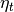

statsmodels.tsa.statespace.dynamic_factor.DynamicFactor¶
-
class
statsmodels.tsa.statespace.dynamic_factor.DynamicFactor(endog, k_factors, factor_order, exog=None, error_order=0, error_var=False, error_cov_type='diagonal', enforce_stationarity=True, **kwargs)[source]¶ Dynamic factor model
Parameters: endog : array_like
The observed time-series process

exog : array_like, optional
Array of exogenous regressors for the observation equation, shaped nobs x k_exog.
k_factors : int
The number of unobserved factors.
factor_order : int
The order of the vector autoregression followed by the factors.
error_cov_type : {‘scalar’, ‘diagonal’, ‘unstructured’}, optional
The structure of the covariance matrix of the observation error term, where “unstructured” puts no restrictions on the matrix, “diagonal” requires it to be any diagonal matrix (uncorrelated errors), and “scalar” requires it to be a scalar times the identity matrix. Default is “diagonal”.
error_order : int, optional
The order of the vector autoregression followed by the observation error component. Default is None, corresponding to white noise errors.
error_var : boolean, optional
Whether or not to model the errors jointly via a vector autoregression, rather than as individual autoregressions. Has no effect unless error_order is set. Default is False.
enforce_stationarity : boolean, optional
Whether or not to transform the AR parameters to enforce stationarity in the autoregressive component of the model. Default is True.
**kwargs
Keyword arguments may be used to provide default values for state space matrices or for Kalman filtering options. See Representation, and KalmanFilter for more details.
Notes
The dynamic factor model considered here is in the so-called static form, and is specified:
where there are k_endog observed series and k_factors unobserved factors. Thus
 is a k_endog x 1 vector and is a
k_factors x 1 vector.
is a k_endog x 1 vector and is a
k_factors x 1 vector.are optional exogenous vectors, shaped k_exog x 1.
 and
 are white noise error terms. In
order to identify the factors, . Denote
.
are white noise error terms. In
order to identify the factors, . Denote
.Options related to the unobserved factors:
- k_factors: this is the dimension of the vector , above. To exclude factors completely, set k_factors = 0.
- factor_order: this is the number of lags to include in the factor evolution equation, and corresponds to , above. To have static factors, set factor_order = 0.
Options related to the observation error term :
- error_order: the number of lags to include in the error evolution equation; corresponds to , above. To have white noise errors, set error_order = 0 (this is the default).
- error_cov_type: this controls the form of the covariance matrix . If it is “dscalar”, then . If it is “diagonal”, then . If it is “unstructured”, then is any valid variance / covariance matrix (i.e. symmetric and positive definite).
- error_var: this controls whether or not the errors evolve jointly according to a VAR(q), or individually according to separate AR(q) processes. In terms of the formulation above, if error_var = False, then the matrices :math:C_i` are diagonal, otherwise they are general VAR matrices.
References
[R60] Lutkepohl, Helmut. 2007. New Introduction to Multiple Time Series Analysis. Berlin: Springer. Attributes
exog (array_like, optional) Array of exogenous regressors for the observation equation, shaped nobs x k_exog. k_factors (int) The number of unobserved factors. factor_order (int) The order of the vector autoregression followed by the factors. error_cov_type ({‘diagonal’, ‘unstructured’}) The structure of the covariance matrix of the error term, where “unstructured” puts no restrictions on the matrix and “diagonal” requires it to be a diagonal matrix (uncorrelated errors). error_order (int) The order of the vector autoregression followed by the observation error component. error_var (boolean) Whether or not to model the errors jointly via a vector autoregression, rather than as individual autoregressions. Has no effect unless error_order is set. enforce_stationarity (boolean, optional) Whether or not to transform the AR parameters to enforce stationarity in the autoregressive component of the model. Default is True. Methods
filter(params, **kwargs)fit([start_params, transformed, cov_type, ...])Fits the model by maximum likelihood via Kalman filter. from_formula(formula, data[, subset])Not implemented for state space models hessian(params, *args, **kwargs)Hessian matrix of the likelihood function, evaluated at the given impulse_responses(params[, steps, impulse, ...])Impulse response function information(params)Fisher information matrix of model initialize()Initialize (possibly re-initialize) a Model instance. initialize_approximate_diffuse([variance])initialize_known(initial_state, ...)initialize_statespace(**kwargs)Initialize the state space representation initialize_stationary()loglike(params, *args, **kwargs)Loglikelihood evaluation loglikeobs(params[, transformed, complex_step])Loglikelihood evaluation observed_information_matrix(params[, ...])Observed information matrix opg_information_matrix(params[, ...])Outer product of gradients information matrix predict(params[, exog])After a model has been fit predict returns the fitted values. prepare_data()Prepare data for use in the state space representation score(params, *args, **kwargs)Compute the score function at params. score_obs(params[, method, transformed, ...])Compute the score per observation, evaluated at params set_conserve_memory([conserve_memory])Set the memory conservation method set_filter_method([filter_method])Set the filtering method set_inversion_method([inversion_method])Set the inversion method set_smoother_output([smoother_output])Set the smoother output set_stability_method([stability_method])Set the numerical stability method simulate(params, nsimulations[, ...])Simulate a new time series following the state space model smooth(params, **kwargs)transform_jacobian(unconstrained[, ...])Jacobian matrix for the parameter transformation function transform_params(unconstrained)Transform unconstrained parameters used by the optimizer to constrained untransform_params(constrained)Transform constrained parameters used in likelihood evaluation to unconstrained parameters used by the optimizer. update(params[, transformed, complex_step])Update the parameters of the model Methods
filter(params, **kwargs)fit([start_params, transformed, cov_type, ...])Fits the model by maximum likelihood via Kalman filter. from_formula(formula, data[, subset])Not implemented for state space models hessian(params, *args, **kwargs)Hessian matrix of the likelihood function, evaluated at the given impulse_responses(params[, steps, impulse, ...])Impulse response function information(params)Fisher information matrix of model initialize()Initialize (possibly re-initialize) a Model instance. initialize_approximate_diffuse([variance])initialize_known(initial_state, ...)initialize_statespace(**kwargs)Initialize the state space representation initialize_stationary()loglike(params, *args, **kwargs)Loglikelihood evaluation loglikeobs(params[, transformed, complex_step])Loglikelihood evaluation observed_information_matrix(params[, ...])Observed information matrix opg_information_matrix(params[, ...])Outer product of gradients information matrix predict(params[, exog])After a model has been fit predict returns the fitted values. prepare_data()Prepare data for use in the state space representation score(params, *args, **kwargs)Compute the score function at params. score_obs(params[, method, transformed, ...])Compute the score per observation, evaluated at params set_conserve_memory([conserve_memory])Set the memory conservation method set_filter_method([filter_method])Set the filtering method set_inversion_method([inversion_method])Set the inversion method set_smoother_output([smoother_output])Set the smoother output set_stability_method([stability_method])Set the numerical stability method simulate(params, nsimulations[, ...])Simulate a new time series following the state space model smooth(params, **kwargs)transform_jacobian(unconstrained[, ...])Jacobian matrix for the parameter transformation function transform_params(unconstrained)Transform unconstrained parameters used by the optimizer to constrained untransform_params(constrained)Transform constrained parameters used in likelihood evaluation to unconstrained parameters used by the optimizer. update(params[, transformed, complex_step])Update the parameters of the model Attributes
endog_namesNames of endogenous variables exog_namesinitial_varianceinitializationloglikelihood_burnparam_namesstart_paramstolerance